# Daten einlesen
df <- read.csv2("Hier/kompletten/Pfad/zur/Datei/data_inklusion.csv")Übung zu Statistik II - Sitzung 4
In der heutigen Sitzung beschäftigen wir uns mit einem Datensatz, der in Anlehnung an (Lüke & Grosche, 2018) simuliert wurde. Dabei handelt es sich lediglich um eine Simulation zu Übungszwecken, die nicht die Originaldaten umfasst bzw. abbildet.
Im Artikel wird untersucht, welche Einstellungen Studienteilnehmende gegenüber Inklusion haben und inwiefern diese durch verschiedene Einflussfaktoren bestimmt werden. Besonderes Augenmerk liegt auf dem Einfluss der wahrgenommenen Haltung der Organisation, die die Befragung durchführt. In zwei Experimenten wurde gezeigt, dass Einstellungen zur inklusiven Bildung nicht stabil sind, sondern stark vom sozialen Kontext beeinflusst werden.
1. Forschungsfragen
Wir wollen in der heutigen Sitzung die folgenden drei Forschungsfragen analysieren:
Inwiefern verändert sich die Einstellung gegenüber Inklusion bezogen auf Bildungs-Outcomes (ati_edu) mit dem Alter?
Verändert sich die Einstellung gegenüber Inklusion bezogen auf Bildungs-Outcomes (ati_edu) mit dem Alter und abhängig von der Einstellung gegenüber Inklusion bezogen auf soziale Outcomes (ati_soc)?
Verändert sich die Einstellung gegenüber Inklusion bezogen auf Bildungs-Outcomes mit dem Alter in Abhängigkeit vom Geschlecht?
2. Auswahl geeigneter statistischer Analyseverfahren
Vorhersage einer metrische AV (ati_edu) durch eine metrische UV (age):
➔ einfache lineare RegressionVorhersage einer metrische AV (ati_edu) durch mehr als eine metrische UV (hier: age, ati_soc):
➔ multiple lineare RegressionVorhersage einer metrische AV (ati_edu) durch mind. eine metrische UV (hier: age) und mind. eine binär kodierte UV (hier: sex):
➔ multiple lineare Regression mit Dummycodierung
3. Vorbereitung und Durchführung der statistischen Verfahren
3.1 Datensatz laden
Variante 1
Den Datensatz über die Angabe des vollständigen Dateipfades einlesen.
Variante 2
Ein geeignetes Arbeitsverzeichnis setzen und dort den Datensatz abspeichern. Dann benötigt der Einlese-Befehl nur noch den Dateinamen.
# Arbeitsverzeichnis setzen
setwd("Hier/kompletten/Pfad/zur/Datei")
# optional: Überprüfung des aktuellen Arbeitsverzeichnisses
getwd()
# Daten einlesen
df <- read.csv2("data_inklusion.csv")3.2 Überblick über den Datensatz
Einen guten Überblick über Inhalt, Struktur und erste deskriptive Statistiken des Datensatzes erhält man z. B. mit den beiden Befehlen str() und summary().
str(df)'data.frame': 231 obs. of 11 variables:
$ group : chr "Group A" "Group A" "Group A" "Group A" ...
$ sex : int 0 1 1 0 1 1 1 0 0 1 ...
$ children : int 0 0 0 0 0 1 0 0 0 0 ...
$ age : int 27 39 21 42 36 27 30 48 27 39 ...
$ contact : int 1 1 1 1 1 1 1 0 0 1 ...
$ edu_prof : int 0 0 0 1 1 0 1 1 0 1 ...
$ education: int 6 8 7 5 9 6 8 8 6 11 ...
$ politics : int 5 5 3 2 2 3 6 3 6 6 ...
$ att_org : int 7 5 6 6 4 2 6 4 4 6 ...
$ ati_edu : num 22.9 18.8 26.4 19 24.7 ...
$ ati_soc : num 9.32 11.46 18.14 8.71 11.77 ...summary(df) group sex children age
Length:231 Min. :0.000 Min. :0.0000 Min. :17.00
Class :character 1st Qu.:0.000 1st Qu.:0.0000 1st Qu.:27.00
Mode :character Median :0.000 Median :0.0000 Median :35.00
Mean :0.303 Mean :0.1169 Mean :34.34
3rd Qu.:1.000 3rd Qu.:0.0000 3rd Qu.:40.00
Max. :1.000 Max. :1.0000 Max. :62.00
contact edu_prof education politics
Min. :0.0000 Min. :0.0000 Min. : 2.000 Min. :0.000
1st Qu.:0.0000 1st Qu.:0.0000 1st Qu.: 6.000 1st Qu.:3.000
Median :1.0000 Median :0.0000 Median : 7.000 Median :4.000
Mean :0.7273 Mean :0.3766 Mean : 7.143 Mean :3.892
3rd Qu.:1.0000 3rd Qu.:1.0000 3rd Qu.: 8.000 3rd Qu.:5.000
Max. :1.0000 Max. :1.0000 Max. :12.000 Max. :8.000
att_org ati_edu ati_soc
Min. :1.000 Min. :13.24 Min. : 1.000
1st Qu.:3.000 1st Qu.:19.39 1st Qu.: 9.563
Median :5.000 Median :21.96 Median :11.865
Mean :4.312 Mean :21.91 Mean :11.768
3rd Qu.:6.000 3rd Qu.:24.25 3rd Qu.:13.862
Max. :7.000 Max. :31.74 Max. :21.290 # weitere nützliche Befehle
head(df)
tail(df)
nrow(df)
ncol(df)
library(psych)
describe(df) # deskriptive Statistiken: describe() aus dem package psych enthält mehr/andere Informationen als summary().
describeBy(df, df$group) # deskriptive Statistiken: describeBy() aus dem package psych gibt Statistiken gesplittet nach Gruppen aus.Wir wissen nun, welche Variablen im Datensatz enthalten sind, aber kennen die Kodierungen nicht. Deshalb benötigen wir noch mehr Informationen aus dem Artikel. Diese finden sich z. B. auf S. 44. Damit können wir eine Art codebook erstellen:
codebook
| Variable | Beschreibung | Kodierung |
|---|---|---|
group |
durchführende Organisation | A, B, C, D (siehe Artikel) |
sex |
Geschlecht | 0 = weiblich, 1 = männlich |
children |
Kind(er)? | 0 = nein, 1 = ja |
age |
Alter | metrisch: Alter in Jahren |
contact |
Kontakt zu Personen mit Behinderung? | 0 = nein, 1 = ja |
edu_prof |
Beruf im Bildungsbereich? | 0 = nein, 1 = ja |
education |
Bildungsniveau | metrisch: Anzahl der Schuljahre |
politics |
Politische Einstellung | 1 = links, 10 = rechts |
att_org |
Wahrgenommene Einstellung der durchführenden Organiation | 1 = absolut gegen Inklusion bis 7 = absolut für Inklusion |
ati_edu |
Einstellung gegenüber Inklusion (Bildungsoutcomes) | 0, …, 35: Summe über 7 Items von 0 = Stimme nicht zu. bis 5 = Stimme zu. |
ati_soc |
Einstellung gegenüber Inklusion (soziale Outcomes) | 0, …, 25: Summe über 5 Items von 0 = Stimme nicht zu. bis 5 = Stimme zu. |
3.3 Voraussetzungen prüfen
- Linearer Zusammenhang zwischen AV und allen (nicht binär kodierten) UV(s)
- Normalverteilung der Residuen
- Homoskedastizität der Residuen
- bei multiplen Regressionen: UVs auf Multikollinearität überprüfen
Die Voraussetzungen 1 & 4 können überprüft werden, bevor die Modelle geschätzt werden. Für 2 & 3 benötigen wir die Residuen, die wir aber erst im Zuge der Schätzung der Modelle erhalten.
3.3.1 Überprüfung der Linearität
Die Linearität kann visuell, z. B. mit Hilfe eines Streudiagramms (scatterplot) überprüft werden. Eine feststehendes Kriterium, ab wann ein Zusammenhang als linear gewertet wird, gibt es allerdings nicht.
Forschungsfrage 1:
base R
# zur Erinnerung: ~ = "in Abhängigkeit von"
# für Plots bedeutet das: y-Achse ~ x-Achse
plot(ati_edu ~ age, data = df,
main = "ATI nach Alter",
xlab = "Alter",
ylab = "ATI (Bildungs-Outcomes)",
ylim = c(min(df$ati_edu)-2,32),
pch = 19, # volle Punkte
col = "#D22E4C") # Farbe der Punkte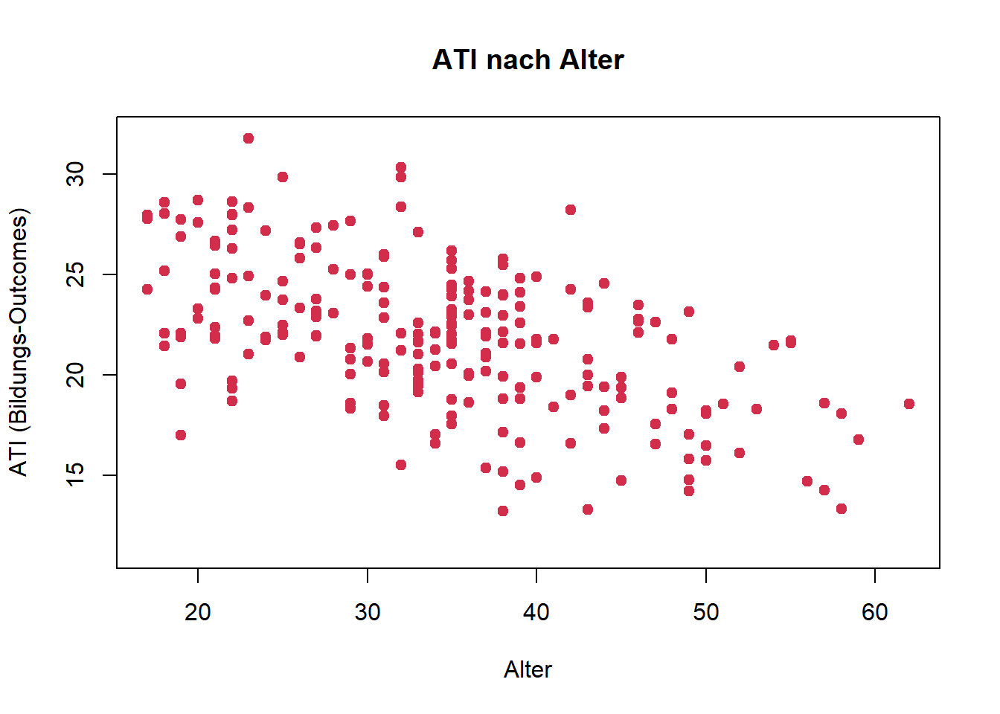
ggplot
library(ggplot2)
ggplot(data = df, aes(x = age, y = ati_edu)) +
geom_point(color = "#D22E4C") +
labs(
title = "ATI nach Alter",
x = "Alter",
y = "ATI (Bildungs-Outcomes)"
) +
theme_minimal()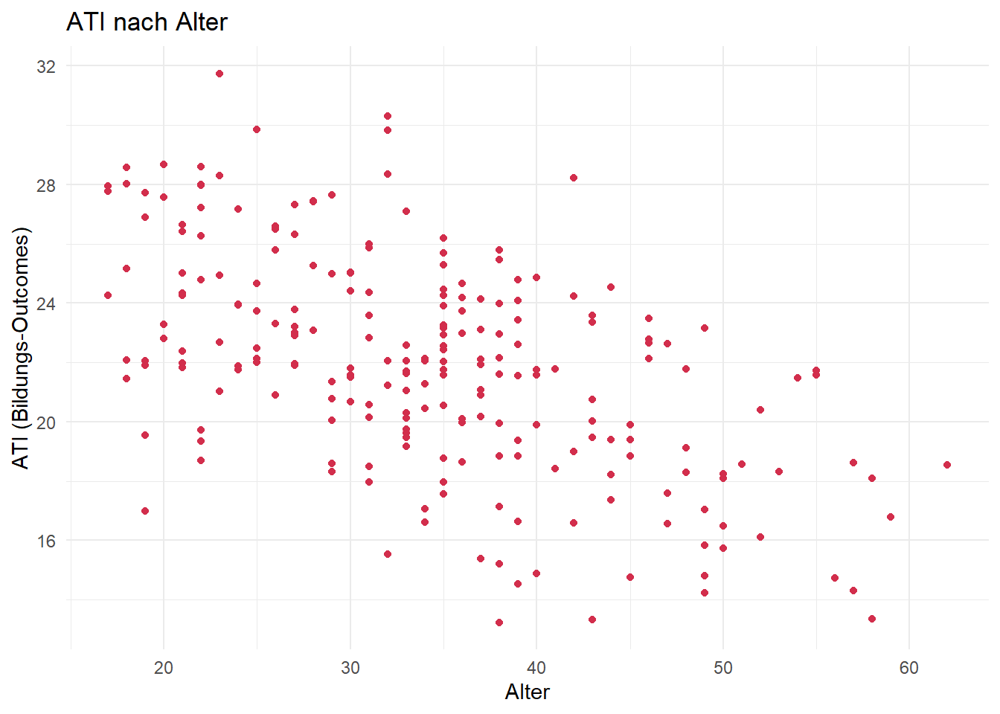
Forschungsfrage 2:
base R
# zur Erinnerung: ~ = "in Abhängigkeit von"
# für Plots bedeutet das: y-Achse ~ x-Achse
plot(ati_edu ~ ati_soc, data = df,
main = "ATI_EDU in Abhängigkeit von ATI_SOC",
xlab = "ATI (soziale Outcomes)",
ylab = "ATI (Bildungs-Outcomes)",
ylim = c(min(df$ati_edu)-2,32),
pch = 19, # volle Punkte
col = "#D22E4C") # Farbe der Punkte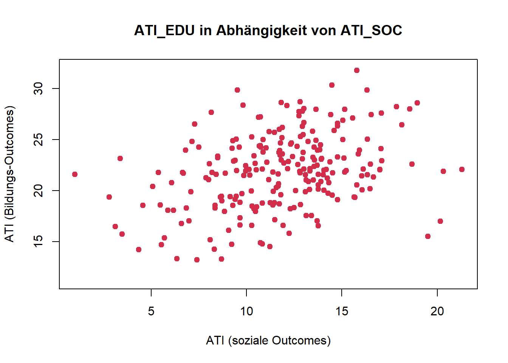
ggplot
library(ggplot2)
ggplot(data = df, aes(x = ati_soc, y = ati_edu)) +
geom_point(color = "#D22E4C") +
labs(
title = "ATI_EDU in Abhängigkeit von ATI_SOC",
x = "ATI (soziale Outcomes)",
y = "ATI (Bildungs-Outcomes)"
) +
theme_minimal()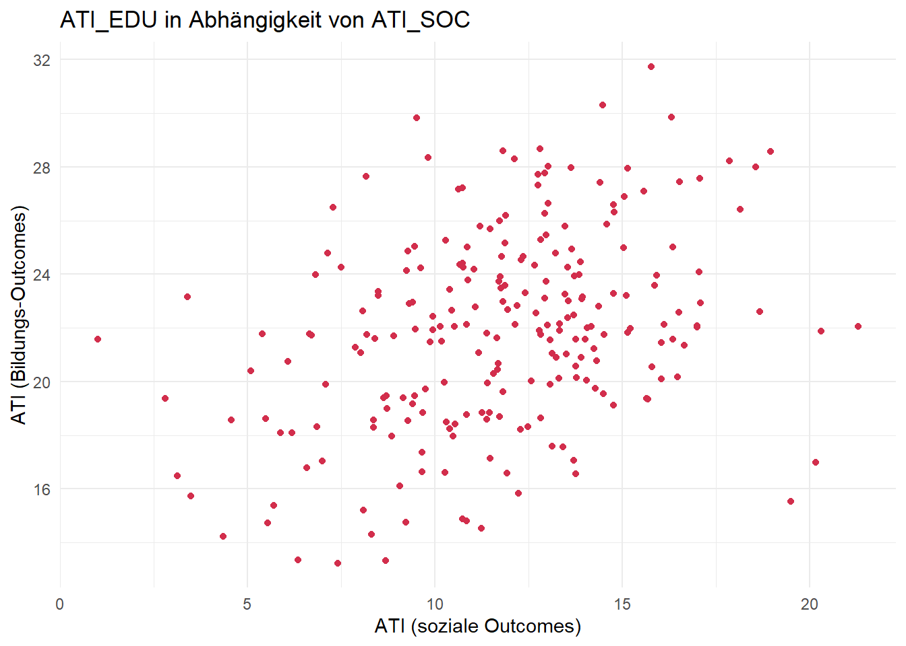
Fazit:
Für beide Forschungsfragen nehmen wir nach Inspektion der Streudiagramme lineare Zusammenhänge an.
3.3.2 Überprüfung auf Multikollinearität
Multikollinearität muss nur für Forschungsfrage 2 überprüft werden, weil hier mindestens zwei metrische Prädiktoren (UVs) ins Modell eingehen. Die multiple Regressionsanalyse liefert nur dann verlässliche Ergebnisse, wenn die Prädiktoren nicht zu hoch miteinander korrelieren. Ein Beispiel für hohe Kollinearität wäre etwa die größe einer Wohnung und die Anzahl der Zimmer. In diesem Fall kann man eine UV bereits durch eine (oder auch mehrere) weitere UV(s) vorhersagen, was zu Problemen in der Schätzgenauigkeit und Interpretierbarkeit des Modells führen kann.
Multikollinearität kann auf zwei Arten überprüft werden:
visuell durch z. B. ein Streudiagramm der beiden Prädiktoren
base R
# zur Erinnerung: ~ = "in Abhängigkeit von"
# Für die Überprüfung der Kollinearität ist die Reihenfolge der UVs egal
plot(age ~ ati_soc, data = df,
main = "Alter in Abhängigkeit von ATI_SOC",
xlab = "ATI (soziale Outcomes)",
ylab = "Alter",
ylim = c(min(df$age)-2, max(df$age)+2),
pch = 19, # volle Punkte
col = "#D22E4C") # Farbe der Punkte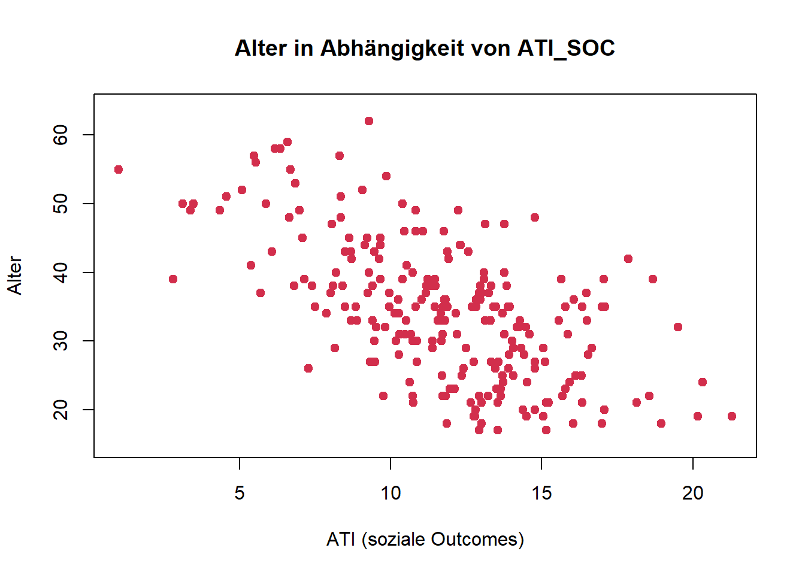
ggplot
library(ggplot2)
ggplot(data = df, aes(x = ati_soc, y = age)) +
geom_point(color = "#D22E4C") +
labs(
title = "Alter in Abhängigkeit von ATI_SOC",
x = "ATI (soziale Outcomes)",
y = "Alter"
) +
theme_minimal()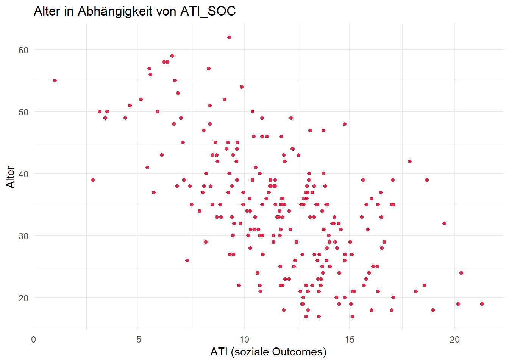
statistisch durch die Berechnung der Korrelation:
cor(df$age, df$ati_soc)[1] -0.6059036Ab einer Pearson-Korrelation von ca. .70 sollte man noch einmal genau prüfen, ob Kollinearität vorliegt (z. B. auch mittels VIF [Variance Inflation Factor]) und ob beide Variablen im Regressionsmodell benötigt werden. Auch hier gilt: Faustregel, kein absoluter Schwellenwert!
Bei mehr als zwei metrischen UVs ist eine Korrelationsmatrix sinnvoll. Da Multikollinearität aber auch dann vorliegen kann, wenn sich ein Prädiktor durch eine (lineare) Kombination anderer Prädiktoren vorhersagen lässt, reicht eine Korrelationsmatrix nicht immer aus. In diesem Fall ist die Verwendung des VIF empfohlen.
Fazit:
In unserem Fall korrelieren die beiden Prädiktoren zwar durchaus hoch, aber noch in einem “vertretbaren Rahmen”, d. h. sie könnten im Modell möglicherweise beide substanziell zur Erklärung von Varianz in der AV beitragen.
3.4. Aufstellen der Modelle
# zu Forschungsfrage 1
mod1 <- lm(df$ati_edu ~ df$age)
# 2D-Plot mit base R
plot(df$ati_edu ~ df$age,
xlab = "Alter",
ylab = "ATI (Bildungs-Outcomes",
col = "#D22E4C",
pch = 16)
# Regressionsgerade einzeichnen
abline(mod1, col = "#F2CCD4", lwd = 4)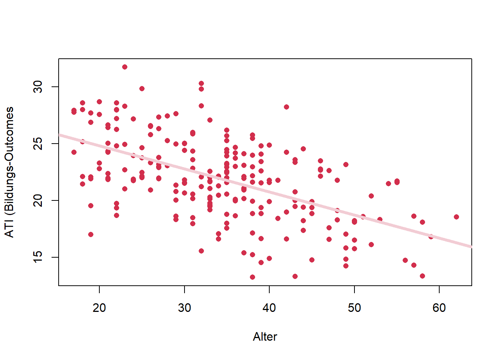
# zu Forschungsfrage 2
mod2 <- lm(ati_edu ~ age + ati_soc, data = df)
# Je mehr Prädiktoren, desto schwieriger wird die Visualisierung des Modells.
# Mehr als drei Dimensionen (2 Prädiktoren + 1 Kriterium) kann man sich nicht mehr vorstellen.
# 3D Plot
library(scatterplot3d)
s3d <- scatterplot3d(df$age, df$ati_soc, df$ati_edu, pch = 16, color = "#D22E4C",
xlab = "Alter", ylab = "ATI (soziale Outcomes)", zlab = "ATI (Bildungs-Outcomes")
# Regressionsebene einzeichnen
s3d$plane3d(mod2)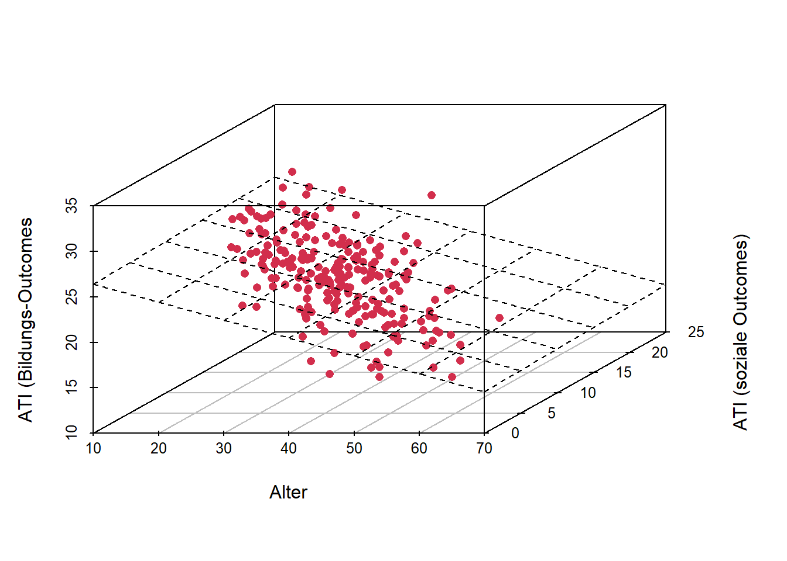
# zu Forschungsfrage 3
mod3 <- lm(ati_edu ~ age + sex, data = df)3.5. Prüfung der restlichen Voraussetzungen
Nachdem die Modelle geschätzt sind, können nun auch die restlichen Voraussetzungen überprüft werden, d. h. insbesondere die Normalverteilung der Residuen und die Homoskedastizität der Residuen.
Hat man die Modelle geschätzt, kann man in R leicht auf die Residuen bzw. geschätzten (auch: vorhergesagten, gefitteten) Werte zugreifen:
resid(model)bzwresiduals(model)liefert die Residuen des jeweiligen Modells.fitted(model)liefert die vorhergesagten Werte, also diejenigen, die auf der Regressionsgerade liegen.
Zum Beispiel für unser Modell 1:
resid(mod1)[1:12] # Die Residuen für die ersten 12 Fälle im Datensatz 1 2 3 4 5 6 7
-0.4976589 -2.1268388 1.8027553 -1.3604928 3.1015034 2.9218840 2.2190329
8 9 10 11 12
2.6466850 -0.2014620 0.5806697 -1.5432726 -2.9652863 fitted(mod1)[1:12] # Die geschätzten Werte der AV (hier: ati_edu) für die ersten 12 Fälle im Datensatz 1 2 3 4 5 6 7 8
23.40243 20.96350 24.62189 20.35377 21.57323 23.40243 22.79269 19.13431
9 10 11 12
23.40243 20.96350 24.82513 25.02837 3.5.1 Normalverteilung der Residuen
Damit wir nicht immer wieder die Funktion resid()schreiben müssen, speichern wir die Residuen zunächst jeweils in einem neuen Objekt:
resid1 <- resid(mod1)
resid2 <- resid(mod2)
resid3 <- resid(mod3)Ob die Residuen normalverteilt sind, kann wieder auf zwei Arten überprüft werden: visuell oder mit Hilfe eines statistischen Tests.
visuell
 Quelle: Artwork by allison_horst
Quelle: Artwork by allison_horst
Geeignete Visualisierungen sind u. a. Histogramme oder Q-Q-Plots.
Forschungsfrage 1:
base R
hist(resid1, col = "#D22E4C", breaks = 24,
xlim = c(-10, 10),
ylim = c(0,25),
main = "Histogramm der Residuen von Modell 1",
xlab = "Residuen",
ylab = "Häufigkeit")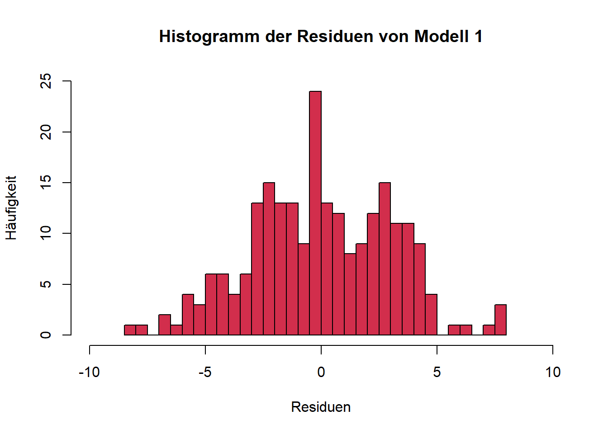
qqnorm(resid1, col = "#D22E4C",
main = "Q-Q-Plot der Residuen von Modell 1",
xlab = "Theoretische Quantile",
ylab = "Empirische Quantile",
pch = 16)
qqline(resid1)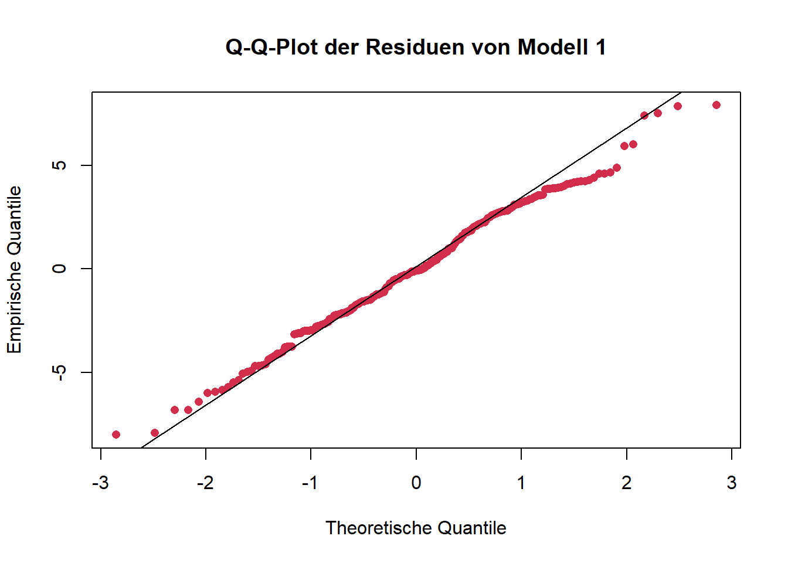
ggplot
ggplot(data.frame(resid1), aes(x = resid1)) +
geom_histogram(color = "black", fill = "#D22E4C", bins = 20) +
labs(title = "Histogramm der Residuen von Modell 1",
x = "Residuen",
y = "Häufigkeit") +
theme_minimal()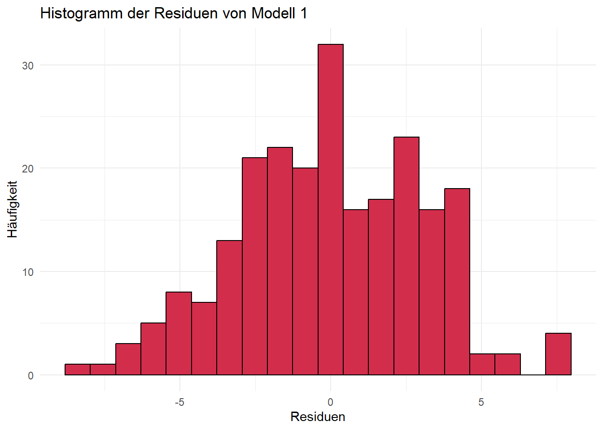
ggplot(data.frame(resid1), aes(sample = resid1)) +
stat_qq(color = "#D22E4C") +
stat_qq_line() +
labs(title = "Q-Q-Plot der Residuen von Modell 1",
x = "Theoretische Quantile", y = "Empirische Quantile") +
theme_minimal()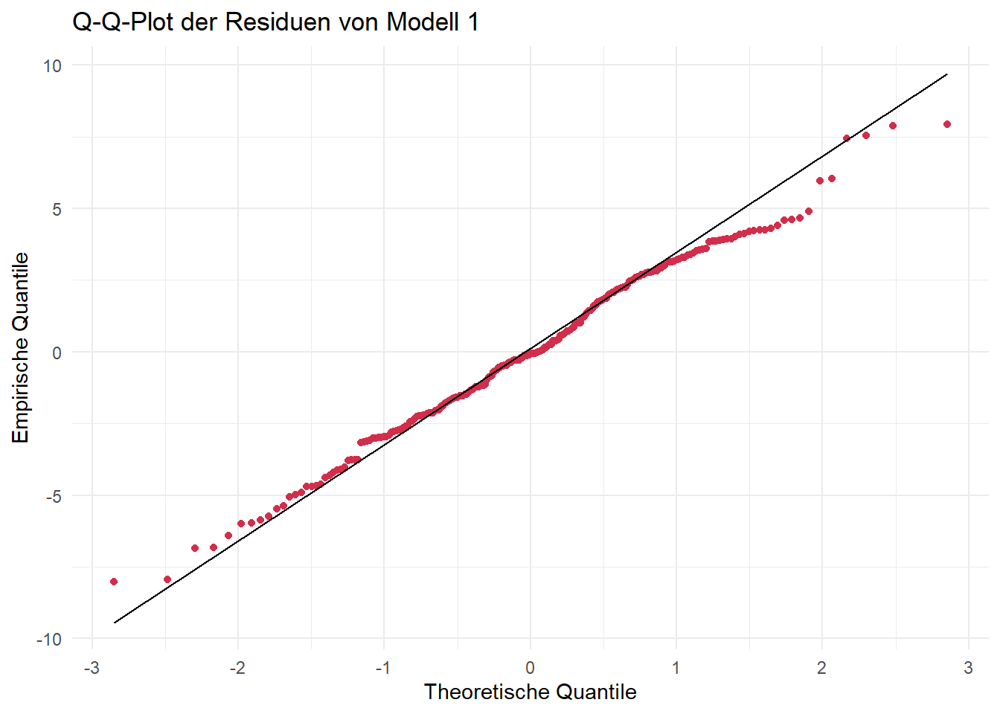
Mit analogem Code können nun die entsprechenden Plots für unsere Modelle 2 und 3 erzeugt werden.
Forschungsfrage 2:
base R
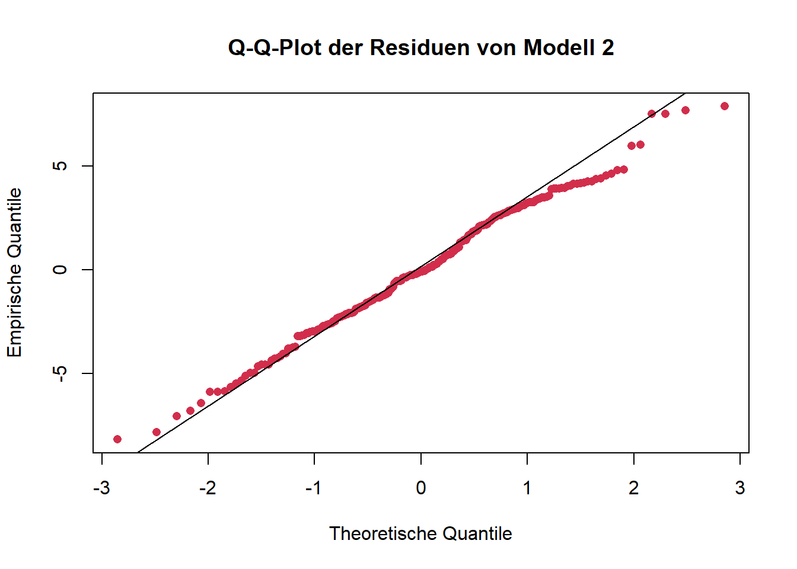
ggplot
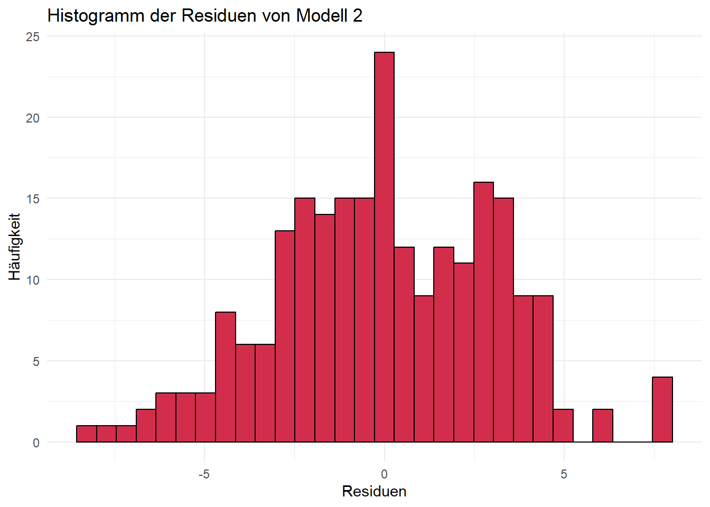
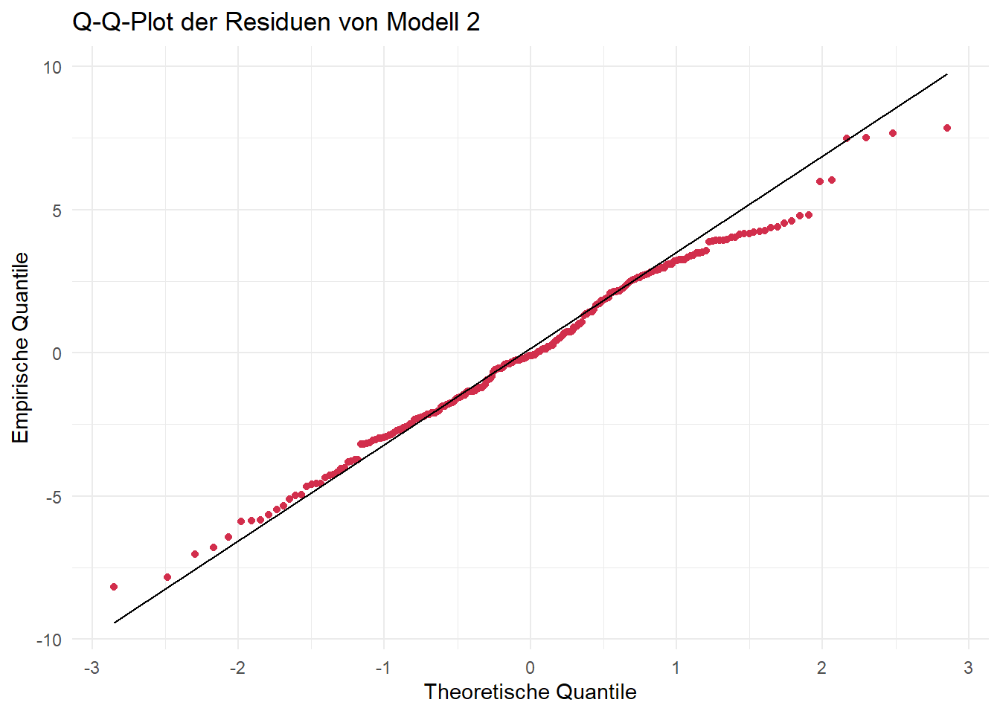
Forschungsfrage 3:
base R
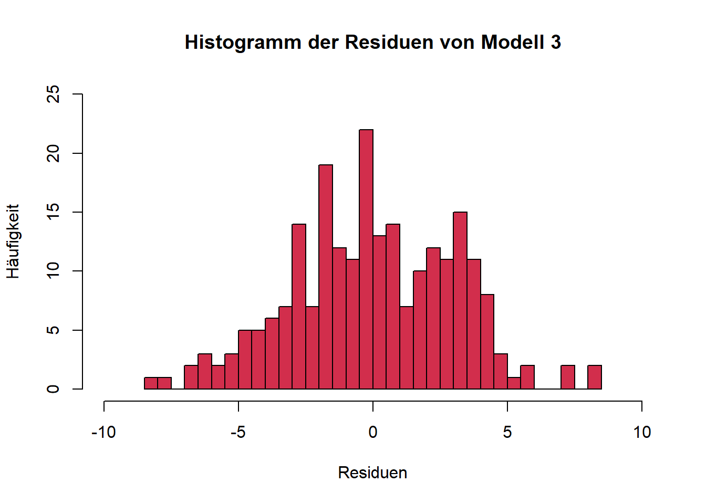
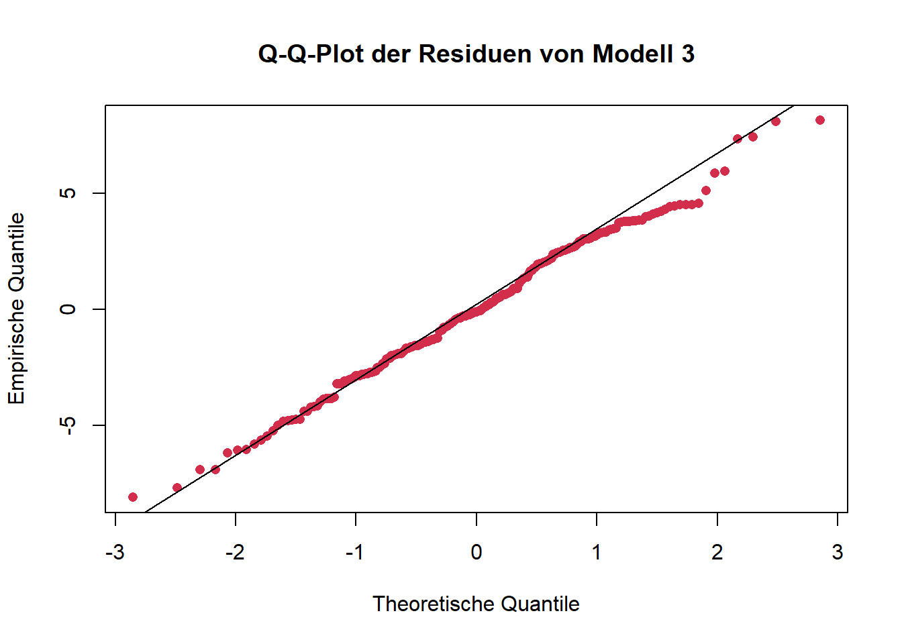
ggplot
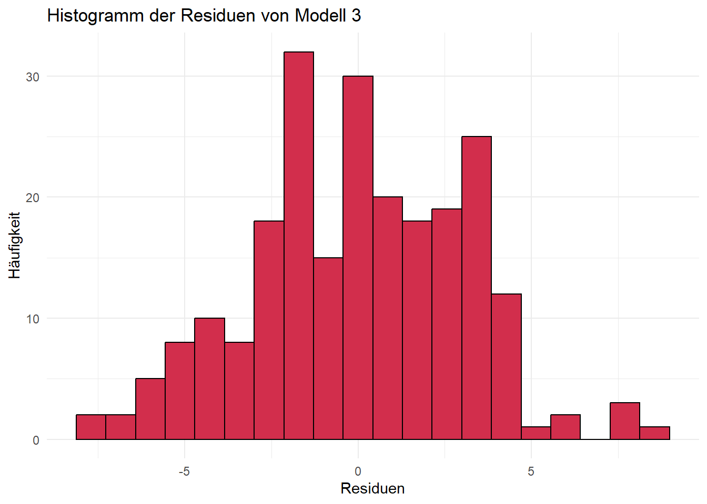
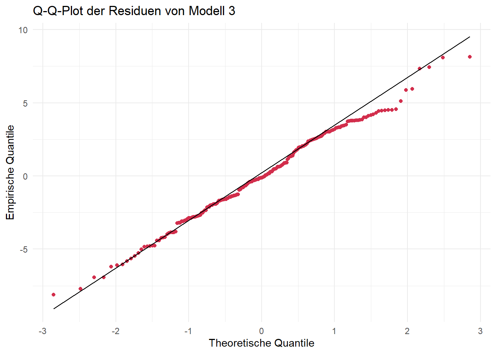
Fazit:
Für alle drei Modelle sind die Residuen annähernd normalverteilt. Bei Histogrammen ist immer zu beachten, dass die Argumente bins bzw. breaks das Aussehen der Verteilung beeinflussen. Daher sehen die Plots auch unterschiedlich aus, je nachdem ob base R oder ggplot verwendet wird. (Mit etwas mehr Code ist es aber auch möglich, gleiche Plots zu erzeugen.) Sind die Argumente ungünstig gewählt, lässt sich eine Normalverteilung u. U. nicht erkennen. Zum Beispiel ergibt sich für unser Modell 1 und unterschiedliche Werte für das Argument bins:
# bins = 10
ggplot(data.frame(resid1), aes(x = resid1)) +
geom_histogram(color = "black", fill = "#D22E4C", bins = 10) +
labs(title = "Histogramm der Residuen von Modell 1",
x = "Residuen",
y = "Häufigkeit") +
theme_minimal()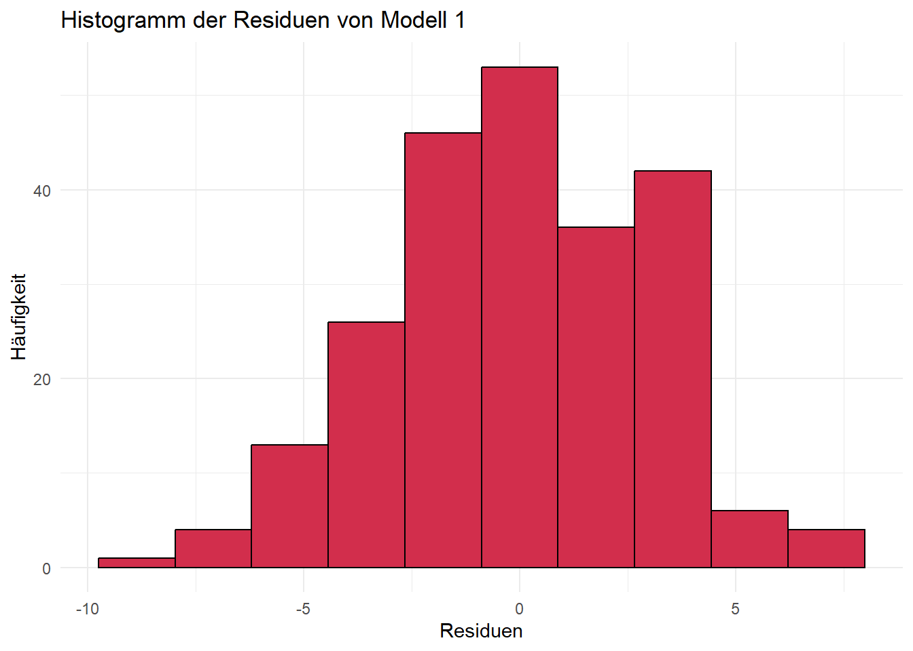
# bins = 30
ggplot(data.frame(resid1), aes(x = resid1)) +
geom_histogram(color = "black", fill = "#D22E4C", bins = 30) +
labs(title = "Histogramm der Residuen von Modell 1",
x = "Residuen",
y = "Häufigkeit") +
theme_minimal()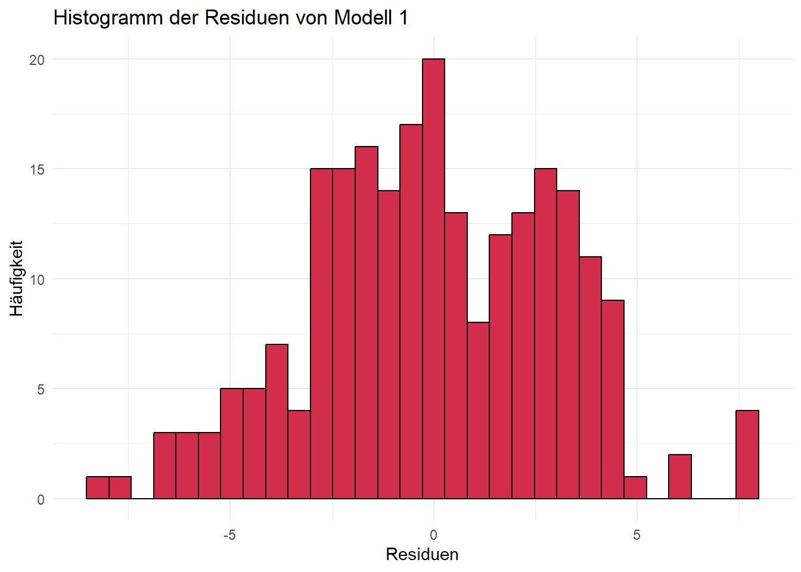
Q-Q-Plots sind dahingehend eine etwas verlässlichere Visualisierungsmöglichkeit. Die Punkte sollten hierbei möglichst auf der eingezeichneten Geraden liegen. An den beiden “Enden” der Geraden gibt es fast immer Abweichungen, weil in diesen Bereichen nur wenige Datenpunkte vorliegen, was die Quantilschätzungen unsicherer macht, sie besonders empfindlich gegenüber Ausreißern sind und sich Unterschiede zwischen der beobachteten und der theoretischen Verteilung vor allem in den Randbereichen deutlich bemerkbar machen.
statistisch: Geeignete statistische Tests sind u. a. der Shapiro-Wilk-Test oder der Kolmogorov-Smirnov-Test. Exemplarisch für unser Modell 1:
Shapiro-Wilk-Test
shapiro.test(resid1)
Shapiro-Wilk normality test
data: resid1
W = 0.99269, p-value = 0.3117Kolmogorov-Smirnov-Test
ks.test(resid1, "pnorm", mean=mean(resid1), sd=sd(resid1))
Asymptotic one-sample Kolmogorov-Smirnov test
data: resid1
D = 0.041448, p-value = 0.8223
alternative hypothesis: two-sidedWährend der Shapiro-Wilk-Test immer auf Normalverteilung testet, testet der Kolmogorov-Smirnov-Test grundsätzlich auf Verteilungen und benötigt nähere Angaben, auf welche Verteilung nun genau getestet werden soll. In unserem Fall ist das die Normalverteilung, die durch den Mittelwert und die Standardabweichung festgelegt ist. Deshalb werden diese beiden Parameter ebenfalls als Argumente übergeben.
Beide Tests haben die Nullhypothese “Normalverteilung liegt vor”. Wird der Test signifikant, würde man also die Nullhypothese ablehnen. Wäre das der Fall, wäre die Voraussetzung der normalverteilten Residuen verletzt.
Fazit:
In unserem Fall werden beide Tests nicht signifikant, wir gehen also von Normalverteilung aus. Grundsätzlich empfiehlt sich immer auch die visuelle Überprüfung, da beide Tests (unterschiedliche) Schwachstellen besitzen und in bestimmten Fällen (z. B. Ausreißer) die Normalverteilung zu schnell “ablehnen” und in anderen Fällen (z. B. zu geringe Power bei kleinen Stichproben) eine Abweichung der Normalverteilung möglicherweise nicht erkennen.
3.5.2 Homoskedaszität der Residuen überprüfen
Homoskedastizität kann ebenfalls gut visuell überprüft werden. Ein geeignetes Mittel ist der sog. Residual-vs-Fitted-Plot.
Bei Homoskedastizität sollte kein Muster erkennbar sein, d. h. die Punkte sollten zufällig um die Nulllinie streuen, ohne z. B. einem Trichter zu ähneln.
Forschungsfrage 1:
base R
plot(fitted(mod1), resid1,
col = "#D22E4C",
pch = 16,
main = "Residuals vs Fitted – Modell 1",
xlab = "Vorhergesagte Werte",
ylab = "Residuen")
abline(h = 0, col = "black", lwd = 3)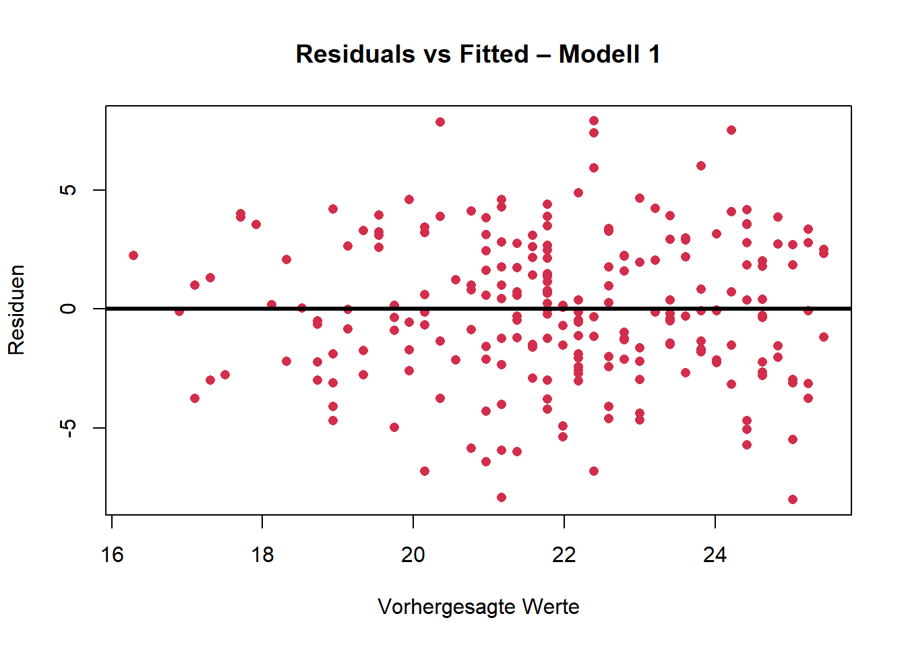
ggplot
ggplot(data.frame(fitted = fitted(mod1), resid = resid1),
aes(x = fitted, y = resid)) +
geom_point(color = "#D22E4C") +
geom_hline(yintercept = 0, linetype = "solid") +
labs(title = "Residuals vs Fitted – Modell 1",
x = "Vorhergesagte Werte",
y = "Residuen") +
theme_minimal()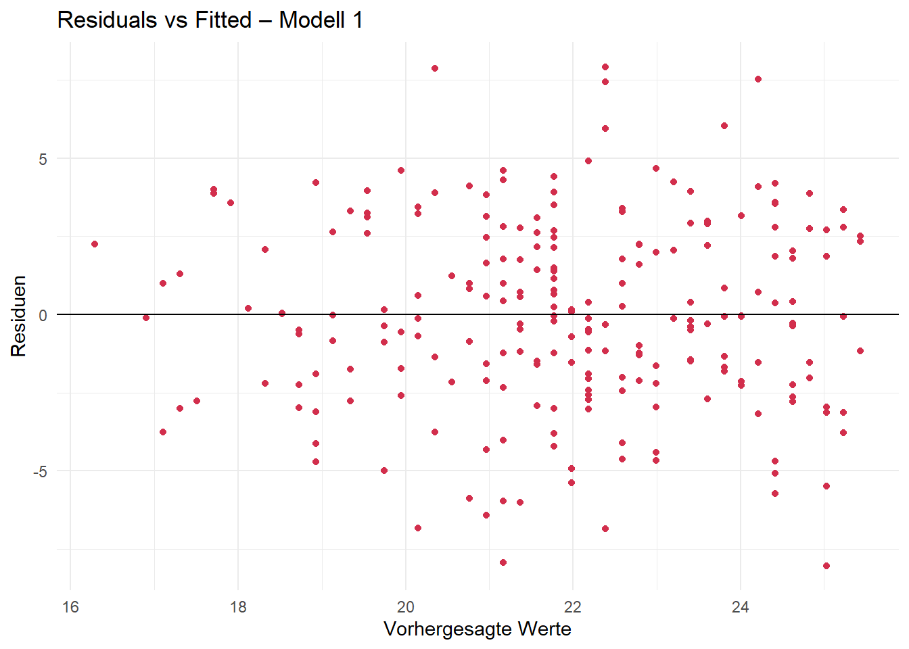
Mit analogem Code können nun die entsprechenden Plots für unsere Modelle 2 und 3 erzeugt werden.
Forschungsfrage 2:
base R
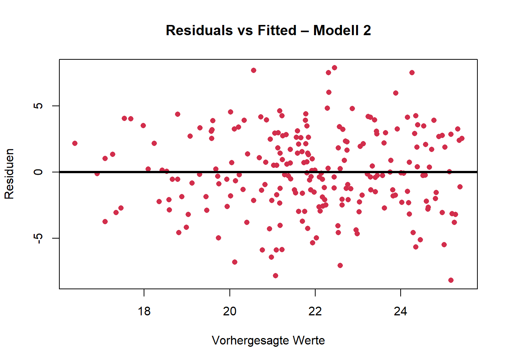
ggplot
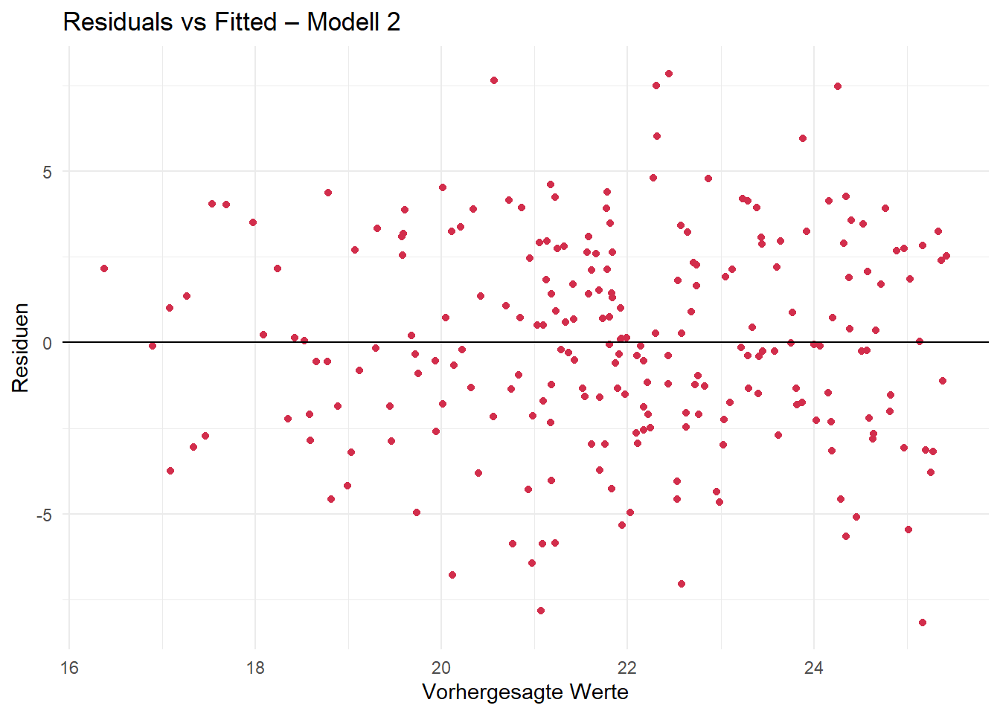
Forschungsfrage 3:
base R
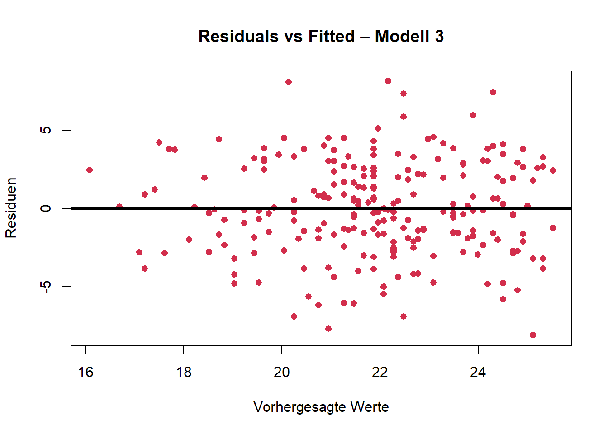
ggplot
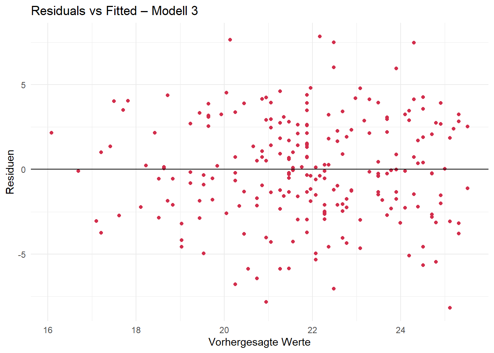
Fazit:
Die graphische Überprüfung deutet auf Homoskedastizität hin. Es sind keine auffälligen Muster zu erkennen.
Da wir nun also alle notwendigen Voraussetzungen überprüft haben und diese jeweils für alle drei Modelle erfüllt sind, können wir diese nun auch sinnvollerweise interpretieren.
4. Interpretation
Um die zur Interpretation nötigen Informationen (Parameterschätzungen, p-Werte, …) zu erhalten, nutzen wir die Funktion summary().
4.1 Forschungsfrage 1
Frage:
Inwiefern verändert sich die Einstellung gegenüber Inklusion bezogen auf Bildungs-Outcomes (ati_edu) mit dem Alter?
summary(mod1)
Call:
lm(formula = df$ati_edu ~ df$age)
Residuals:
Min 1Q Median 3Q Max
-8.0271 -2.1263 -0.0693 2.3967 7.9186
Coefficients:
Estimate Std. Error t value Pr(>|t|)
(Intercept) 28.89000 0.71953 40.15 <2e-16 ***
df$age -0.20324 0.02012 -10.10 <2e-16 ***
---
Signif. codes: 0 '***' 0.001 '**' 0.01 '*' 0.05 '.' 0.1 ' ' 1
Residual standard error: 3.053 on 229 degrees of freedom
Multiple R-squared: 0.3082, Adjusted R-squared: 0.3052
F-statistic: 102 on 1 and 229 DF, p-value: < 2.2e-16
geschätzte Regressionsgleichung:
ati_edu = 28.89 − 0.203 ⋅ age
Das hieße z. B. eine durchschnittliche Person im Alter von 50 Jahren hätte einen geschätzten ati_edu-Wert von
28.89 - 0.203 ⋅ 50 = 18.74
Interpretation:
Intercept (28.89):
Wenn das Alter 0 wäre (was inhaltlich hier keinen realistischen Sinn ergibt), wäre die vorhergesagte Einstellung gegenüber Inklusion 28.89 Punkte. In diesem Kontext ist der Achsenabschnitt also rein technisch/hypothetisch zu interpretieren.Alter (−0.20324):
Mit jedem weiteren Lebensjahr sinkt die Einstellung gegenüber Inklusion im Durchschnitt um 0.20 Punkte. Der negative Koeffizient weist darauf hin, dass ältere Personen tendenziell eine negativere Einstellung gegenüber Inklusion haben. Der Effekt ist signifikant.Modellgüte
- Varianzaufklärung (R² = 0.3082 / Adjusted R² = 0.3052):
Das Modell erklärt ca. 30.8% der Varianz in der Einstellung gegenüber Inklusion. Für sozialwissenschaftliche Modelle ist das ein mittlerer Effekt. - F-Test p-Wert < 2.2e-16:
Das Gesamtmodell ist signifikant. Die Prädiktorvariable “Alter” trägt also statistisch signifikant zur Vorhersage bei.
- Varianzaufklärung (R² = 0.3082 / Adjusted R² = 0.3052):
4.2 Forschugnsfrage 2
Frage:
Verändert sich die Einstellung gegenüber Inklusion bezogen auf Bildungs-Outcomes (ati_edu) mit dem Alter und abhängig von der Einstellung gegenüber Inklusion bezogen auf soziale Outcomes (ati_soc)?
summary(mod2)
Call:
lm(formula = ati_edu ~ age + ati_soc, data = df)
Residuals:
Min 1Q Median 3Q Max
-8.1687 -2.0942 -0.1002 2.4357 7.8579
Coefficients:
Estimate Std. Error t value Pr(>|t|)
(Intercept) 28.37385 1.56742 18.102 < 2e-16 ***
age -0.19755 0.02534 -7.796 2.27e-13 ***
ati_soc 0.02725 0.07347 0.371 0.711
---
Signif. codes: 0 '***' 0.001 '**' 0.01 '*' 0.05 '.' 0.1 ' ' 1
Residual standard error: 3.059 on 228 degrees of freedom
Multiple R-squared: 0.3086, Adjusted R-squared: 0.3026
F-statistic: 50.89 on 2 and 228 DF, p-value: < 2.2e-16
geschätzte Regressionsgleichung:
ati_edu = 28.37 − 0.198 ⋅ age + 0.027 ⋅ ati_soc
Das hieße z. B. eine durchschnittliche Person im Alter von 50 Jahren und einem ati_soc-Wert von 20 hätte einen geschätzten ati_edu-Wert von
28.37 − 0.198 ⋅ 50 + 0.027 ⋅ 20 = 18.73
Interpretation:
Intercept (28.37):
Wenn sowohl das Alter als auch ati_soc den Wert 0 hätten (was unrealistisch ist), läge die vorhergesagte Einstellung gegenüber Inklusion bei 28.37 Punkten. In diesem Kontext ist der Achsenabschnitt also rein technisch/hypothetisch zu interpretieren.Alter (−0.19755):
Mit jedem weiteren Lebensjahr sinkt die Einstellung gegenüber Inklusion im Durchschnitt um rund 0.20 Punkte. Der negative Koeffizient weist darauf hin, dass ältere Personen tendenziell eine negativere Einstellung gegenüber Inklusion haben. Der Effekt ist signifikant.Soziale Einstellung gegenüber Inklusion (ati_soc = 0.02725):
Der geschätzte Effekt ist positiv, aber nicht signifikant (p = 0.711). Die Variable trägt also nicht signifikant zur Vorhersage bei.Modellgüte
- Varianzaufklärung (R² = 0.3086 / Adjusted R² = 0.3026):
Die Varianzaufklärung liegt weiterhin bei ca. 30.9%, vergleichbar mit Modell 1. Die zusätzliche Prädiktorvariable (ati_soc) verbessert das Modell also kaum. - F-Test p-Wert < 2.2e-16:
Das Gesamtmodell ist signifikant – mindestens ein Prädiktor (hier: Alter) trägt signifikant zur Vorhersage bei.
- Varianzaufklärung (R² = 0.3086 / Adjusted R² = 0.3026):
4.3 Forschugnsfrage 3
Frage:
Verändert sich die Einstellung gegenüber Inklusion bezogen auf Bildungs-Outcomes mit dem Alter in Abhängigkeit vom Geschlecht?
summary(mod3)
Call:
lm(formula = ati_edu ~ age + sex, data = df)
Residuals:
Min 1Q Median 3Q Max
-8.1139 -1.9601 -0.1178 2.4351 8.1400
Coefficients:
Estimate Std. Error t value Pr(>|t|)
(Intercept) 28.96572 0.72790 39.793 <2e-16 ***
age -0.20266 0.02016 -10.053 <2e-16 ***
sex -0.31568 0.43788 -0.721 0.472
---
Signif. codes: 0 '***' 0.001 '**' 0.01 '*' 0.05 '.' 0.1 ' ' 1
Residual standard error: 3.056 on 228 degrees of freedom
Multiple R-squared: 0.3098, Adjusted R-squared: 0.3037
F-statistic: 51.17 on 2 and 228 DF, p-value: < 2.2e-16
geschätzte Regressionsgleichung:
ati_edu = 28.97 − 0.203 ⋅ age − 0.316 ⋅ sex
Da es sich hierbei um eine Dummy-Regression handelt, ergibt sich folglich für
- weibliche Personen (sex = 0): ati_edu = 28.97 − 0.203 ⋅ age - männliche Personen (sex = 1): ati_edu = 28.97 − 0.203 ⋅ age − 0.316 ⋅ 1 = 28.654 − 0.203 ⋅ age
Wir sehen also, dass sich der Intercept zwischen den beiden Gruppen verändert, nicht aber die Steigung.
(Weiterführend: Möchte man nun noch ein mögliches Wechselspiel zwiscehn Alter und Geschlecht mit modellieren, also dass z. B. sich das Geschlecht in unterschiedlichen Altersgruppen unterschiedlich auswirkt, müsste man noch einen Interaktionsterm mitaufnehmen. Dadurch kann auch die Steigung zwischen beiden Gruppen variieren.)
Das hieße z. B. eine durchschnittliche
- weibliche Person im Alter von 50 Jahren hätte einen geschätzten ati_edu-Wert von
28.97 − 0.203 ⋅ 50 = 18.82 - männliche Person im Alter von 50 Jahren hätte einen geschätzten ati_edu-Wert von 28.654 − 0.203 ⋅ 50 = 18.504
Interpretation:
Intercept (28.97):
Die vorhergesagte Einstellung gegenüber Inklusion liegt bei 28.97 Punkten für eine Person mit Alter = 0 und sex = 0 (weiblich). In diesem Kontext ist der Achsenabschnitt also rein technisch/hypothetisch zu interpretieren.Alter (−0.20266):
Der Effekt ist nahezu identisch zu Modell 1. Mit jedem Lebensjahr sinkt die Einstellung gegenüber Inklusion im Durchschnitt um ca. 0.20 Punkte. Der Effekt ist signifikant.Geschlecht (−0.31568):
Der negative Koeffizient legt nahe, dass sex = 1 (männlich) mit einer geringfügig negativeren Einstellung verbunden ist – allerdings ist der Effekt nicht signifikant (p = 0.472).Modellgüte
- Varianzaufklärung (R² = 0.3098 / Adjusted R² = 0.3037):
Das Modell erklärt ca. 30.9% der Varianz – praktisch identisch mit Modell 1. Die zusätzliche Variable (Geschlecht) bringt keinen erkennbaren Vorteil. - F-Test p-Wert < 2.2e-16:
Das Gesamtmodell ist signifikant – mindestens ein Prädiktor (hier: Alter) ist bedeutsam.
- Varianzaufklärung (R² = 0.3098 / Adjusted R² = 0.3037):
Literatur
Lüke, T., & Grosche, M. (2018). What do I think about inclusive education? It depends on who is asking. Experimental evidence for a social desirability bias in attitudes towards inclusion. International Journal of Inclusive Education, 22(1), 38–53. https://doi.org/10.1080/13603116.2017.1348548